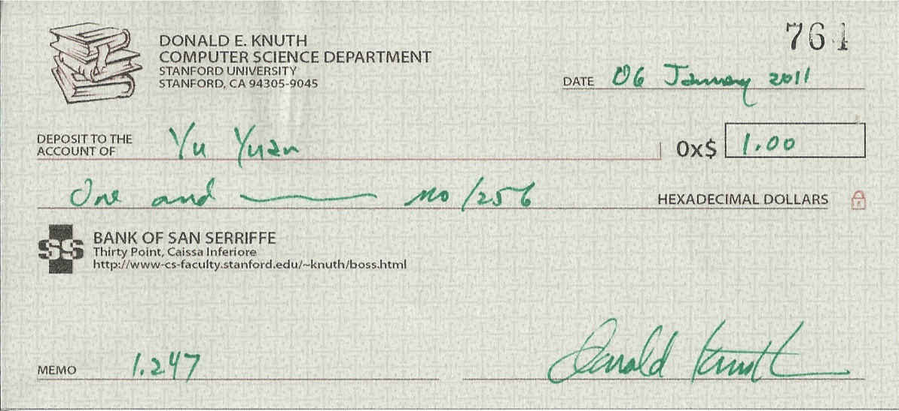

Hi, I'm Yú Yuān(于淵). You can call me Forrest, or YY, or Y². Feel free to look around.
I have a very bad memory, so I take notes when I read and learn. Here are some of them.
I have three Knuth reward checks (click here if you don't know what Knuth reward check is).
Search "Forrest Y Yu" in The Bank of San Serriffe to see my balance.
These are my books (referred to as The Books for short.) The second and the fourth are the Traditional Chinese versions of the first and the third respectively.
The English translations of the book names would be (if you don't read Chinese):
Orange'S: The Implementation Of An Operating System is also known as the 2nd edition of Operating System From Scratch, but it's more like a brand new book than a common second edition because it includes four more chapters and the book was re-typeset completely by myself (I was not satisfied with the typeset of the 1st edition). Furthermore, the OS introduced in Orange'S: The Implementation Of An Operating System is much more complicated than that in Operating System From Scratch.
The Books teach operating system implementation in the most practical way possible by showing and explaining the code of every phase in the development. The reader will see how a simplest boot sector expands into an operating system.
Most books on operating systems are strong on theory and weak on practice. Some books, Operating System: Design and Implementation by A.S. Tanenbaum and A.S. Woodhull for instance, aims to provide a balance between the two. However, even this kind of books does not cover enough details, such as where to begin, how to setup a developing environment and how to debug. The codes of the systems are always available, but a reader will find it difficult to understand every single file because most modules and functions are interdependent. More than that, the books help very little for one who wants to develop his own operating system, because the chapters are not arranged for the convenience of practicing OS implementation, but for introducing an existing OS implementation.
The Books aim to help a reader develop his own operating system. Everything related to the OS DIY job is covered, such as writing a boot sector, loading a kernel, reading and writing the I/O ports, etc. Everything needed in the development including how to choose a compiler, how to debug when the system doesn''t work as expected, and how to run the OS in an emulator, etc, is introduced. Some knowledge, often omitted by an OS book because it is considered out of the scope, is covered too, as long as it is needed for developing an OS. For example, IA protect mode is introduced in chapter 3, since IA-32 is chosen as the default platform.
The chapters in The Books are arranged chronologically. Each chapter is separated into phases. Following the chapters, one can develop a whole system step by step. Each step takes only a little effort so it is easy for the reader to do it by himself. For the reader''s convenience, the contents of the CD-ROM are also arranged in chapters and phases. Every phase has its own folder, which contains all the results by the time the phase is finished. One can easily build and run it without having to know the code added later. When a reader is developing his own OS, he needs only to focus on the new features added to the current phase, regardless of the complexity of the whole system. When all these efforts accumulate, he will find a pretty good toy OS is such a mission possible.
The operating system introduced in The Books is an open source project. The code can be found at my github.
You will figure out how if you really want to.